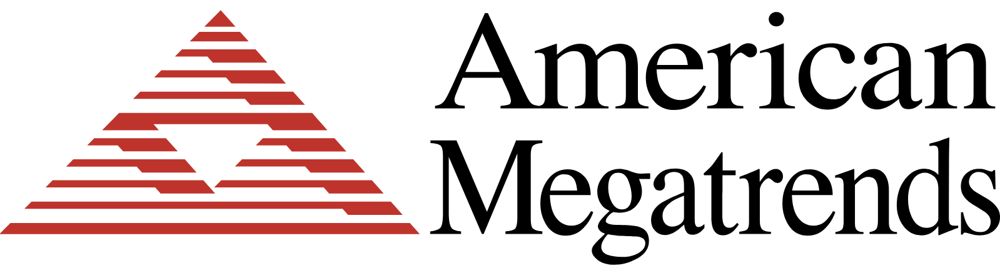
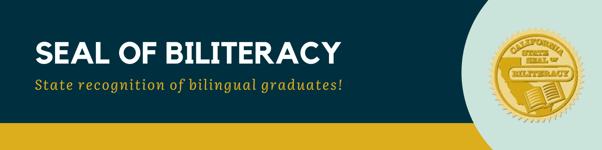

Data Analytics Internship
During my internship at Georgia State University, I gained multiple skills in the field of Data Analytics. I learned how to effectively visualize data, using software such as Tableau, build effective machine learning models using Linear and Logistic regression as well as developing important Business Acumen skills for future endeavors.
For my final deliverable, I created a presentation and predictive model over Flight Delay. The model successfully predicted if a flight would be delayed for a extended period of time using Logistic Regression. I have linked a Github Repository with the model and presentation.
American Megatrends Internship
During my internship at American Megatrends, I gained valuable insights into the world of technology and had the opportunity to work on projects related to BMC (Baseboard Management Controller) and server development. I witnessed multiple demos over Baseboard Management Controller related softwares and hardwares, including IPMI protocol and Redfish API. I also learned about the uses of KVMs in servers.
By the end of the internship, I gained a lot more technical skills in the field of hardware and firmware. For my final deliverable, I built a couple of BMCs using a QEMU virtual machine and a Raspberry Pi microcontroller. I have linked a Github repository below of my experience for the use of future interns.
Presidential Award
As a high school student, I have avidly volunteered at Lilburn Tamil School. Lilburn Tamil School focuses on teaching students Tamil, and during the 2022 - 2023 year I volunteer at Lilburn Tamil School amassing 100+ hours. Due to the fact, I achieved so many hours I recieved the Bronze Presidential Award for my endeavors.
Seal of Biliteracy
During my time at Lilburn Tamil School, I also spent 8 years learning the Tamil language. After graduating at Lilburn Tamil School, I earned the Seal of Biliteracy and earned credits for learning Tamil. I also graduated with the second highest grade in my class which was a 97 average.
AP Scholar with Distinction
Throughout highschool I plan on taking a wide variety of AP exams. Currently, I have taken the AP Computer Science Principles, AP Biology, AP Calculus AB, AP Computer Science Applications and the AP World History exams.
I have recieved a 4 or higher on all of my exams, and therefore have earned the AP Scholar with Distinction award, which is the highest AP Scholar award attainable by students.